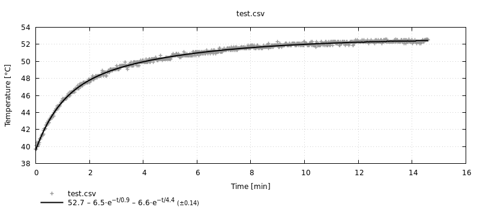
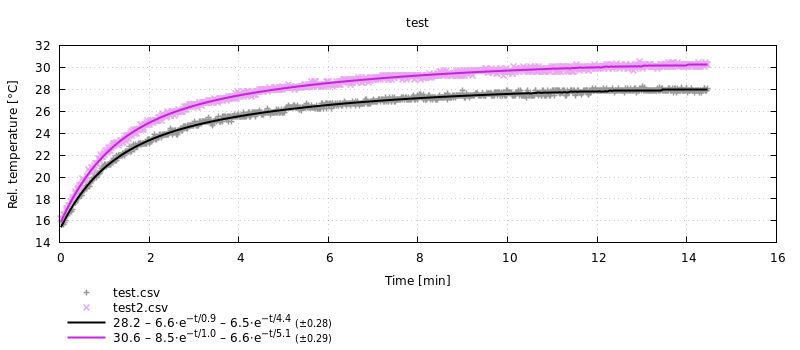
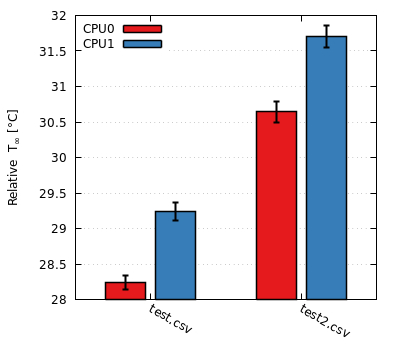
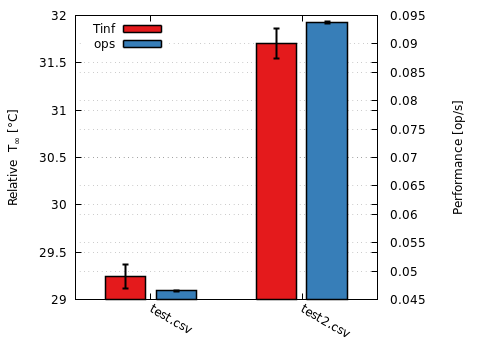
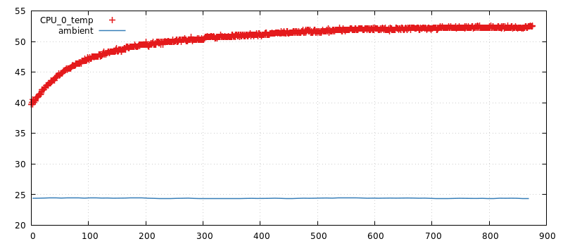

Thermobench.jl
Julia module for working with thermobench-produced CSV files.
Contents
Installation
Thermobench.jl can be installed using the Julia package manager. From the Julia REPL, type ] to enter the Pkg REPL mode and run:
pkg> develop /path/to/thermobench/juliaAlternatively, if you want to use the same versions of packages as the author of the package, run:
(@v1.4) pkg> activate /path/to/thermobench/julia
(Thermobench) pkg> instantiateUsage
Thermobench package supports plotting with Gnuplot.jl package so you will most likely need both packages:
using Thermobench, GnuplotYou can also create a shortcut T for accessing non-exported members of Thermobench package.
const T = ThermobenchHigh-level data processing and graphing
The simplest way to using the package is the multi_fit function. In the example below, it reads the data from a CSV file and fits a thermal model to it. The result can be directly plotted by Gnuplot.jl:
julia> @gp multi_fit("test.csv")
You can pass multiple CSV files to multi_fit. The result is shown as a DataFrame, which makes it easy to compare the results. You can also specify additional keywords to control the operation. Below we use subtract to subtract ambient temperature from the data to fit, use_measurements to produce results with confidence intervals and use_cmpfit to use alternative fitting solver.
julia> mf = multi_fit(["test.csv", "test2.csv"], subtract=:ambient, use_cmpfit=true, use_measurements=true)
Thermobench.MultiFit: test
2×9 DataFrame. Omitted printing of 4 columns
│ Row │ name │ column │ rmse │ ops │ Tinf │
│ │ String │ Symbol │ Float64 │ Measurements.M… │ Measureme… │
├─────┼───────────┼────────────┼──────────┼─────────────────┼────────────┤
│ 1 │ test.csv │ CPU_0_temp │ 0.283474 │ 0.046519±7.6e-5 │ 28.24±0.1 │
│ 2 │ test2.csv │ CPU_0_temp │ 0.285696 │ 0.0938±0.00014 │ 30.65±0.14 │
julia> @gp mf
In most cases, we are interested only in $T_∞$ parameters. These can be plot (and compared between multiple data sets) with plot_Tinf.
julia> mf2 = multi_fit(["test.csv", "test2.csv"], :CPU_1_temp, name="CPU1", subtract=:ambient, use_cmpfit=true, use_measurements=true)
Thermobench.MultiFit: CPU1
2×9 DataFrame. Omitted printing of 4 columns
│ Row │ name │ column │ rmse │ ops │ Tinf │
│ │ String │ Symbol │ Float64 │ Measurements.M… │ Measureme… │
├─────┼───────────┼────────────┼──────────┼─────────────────┼────────────┤
│ 1 │ test.csv │ CPU_1_temp │ 0.286691 │ 0.046519±7.6e-5 │ 29.25±0.12 │
│ 2 │ test2.csv │ CPU_1_temp │ 0.289158 │ 0.0938±0.00014 │ 31.7±0.16 │
julia> @gp plot_Tinf(rename!(mf, "CPU0"), mf2) key="left"
Both $T_∞$ and benchmark performance can be plotted with plot_Tinf_and_ops:
julia> @gp plot_Tinf_and_ops(mf2) key="left"
Raw thermobench data
To access raw data from thermobench CSV files, use the Thermobench.read function:
julia> using DataFrames
julia> d = T.read("test.csv");
julia> dump(d, maxdepth=1)
Thermobench.Data
df: DataFrame
name: String "test.csv"
meta: Dict{Any,Any}
julia> first(d.df, 6)
6×30 DataFrame. Omitted printing of 25 columns
│ Row │ time │ CPU_0_temp │ CPU_1_temp │ GPU_0_temp │ GPU_1_temp │
│ │ Float64 │ Float64? │ Float64? │ Float64? │ Float64? │
├─────┼────────────┼────────────┼────────────┼────────────┼────────────┤
│ 1 │ 5.2376e-5 │ 39.7 │ 40.5 │ 40.5 │ 40.5 │
│ 2 │ 0.00298869 │ 39.7 │ 40.5 │ 40.5 │ 40.5 │
│ 3 │ 0.112669 │ missing │ missing │ missing │ missing │
│ 4 │ 1.00012 │ 40.1 │ 40.7 │ 40.1 │ 40.1 │
│ 5 │ 2.00109 │ 39.7 │ 40.7 │ 39.7 │ 39.7 │
│ 6 │ 2.16951 │ missing │ missing │ missing │ missing │You can plot the data by using directly the values from DataFrame d.df, but the plot(::Thermobench.Data) method makes it easier:
@gp plot(d, :CPU_0_temp) key="left"
@gp :- plot(d, :ambient, with="lines")
Reference
Thermobench.DataThermobench.DataThermobench.MultiFitDataFrames.rename!Thermobench.fitThermobench.interpolateThermobench.interpolate!Thermobench.multi_fitThermobench.normalize_units!Thermobench.ops_estThermobench.ops_per_secThermobench.plotThermobench.plotThermobench.plotThermobench.plot_TinfThermobench.plot_Tinf_and_opsThermobench.plot_barsThermobench.plot_fitThermobench.printfitThermobench.readThermobench.sample_mean_estThermobench.strip_units!Thermobench.thermocam_correct!Thermobench.@symarray
DataFrames.rename! — Methodrename!(mf::MultiFit, name)Rename MultiFit data structure.
The name is often used as graph label so renaming can be used to set descriptive graph labels.
Thermobench.fit — Methodfit(
time_s::Vector{Float64},
data::Vector{Float64};
order::Int64 = 2,
p0 = nothing,
tau_bounds = [(1, 60*60)],
k_bounds = [(-120, 120)],
T_bounds = (0, 120),
use_cmpfit::Bool = false,
)Fit a thermal model to time series given by time_s and data. The thermal model has the form of
where T_∞, kᵢ and τᵢ are the coefficients found by this function.
If use_cmpfit is true, use CMPFit.jl package rather than LsqFit.jl. LsqFit doesn't work well in constrained settings.
You can limit the values of fitted parameters with *_bounds parameters. Each bound is a tuple of lower and upper limit. T_bounds limits the T∞ parameter. tau_bounds and k_bounds limit the coefficients of exponential functions $k·e^{-t/τ}$. If you specify less tuples than the order of the model, the last limit will be repeated.
Example
julia> using StatsBase: coef
julia> d = Thermobench.read("test.csv");
julia> f = fit(d.df.time, d.df.CPU_0_temp);
julia> coef(f)
5-element Array{Float64,1}:
53.00028128677644
-13.124669110533562
317.62956167523816
-8.162698557462654
59.36603973254213
julia> printfit(f)
"53.0 – 8.2⋅e^{−t/59.4} – 13.1⋅e^{−t/317.6}"Thermobench.interpolate! — Methodinterpolate!(df::AbstractDataFrame)In-place version of interpolate.
Thermobench.interpolate — Methodinterpolate!(df::AbstractDataFrame)Replace missing values with results of linear interpolation performed against the first column (time).
julia> x = DataFrame(t=[0.0, 1, 2, 3, 1000, 1001], v=[0.0, missing, missing, missing, 1000.0, missing])
6×2 DataFrame
│ Row │ t │ v │
│ │ Float64 │ Float64? │
├─────┼─────────┼──────────┤
│ 1 │ 0.0 │ 0.0 │
│ 2 │ 1.0 │ missing │
│ 3 │ 2.0 │ missing │
│ 4 │ 3.0 │ missing │
│ 5 │ 1000.0 │ 1000.0 │
│ 6 │ 1001.0 │ missing │
julia> interpolate(x)
6×2 DataFrame
│ Row │ t │ v │
│ │ Float64 │ Float64? │
├─────┼─────────┼──────────┤
│ 1 │ 0.0 │ 0.0 │
│ 2 │ 1.0 │ 1.0 │
│ 3 │ 2.0 │ 2.0 │
│ 4 │ 3.0 │ 3.0 │
│ 5 │ 1000.0 │ 1000.0 │
│ 6 │ 1001.0 │ missing │
Thermobench.multi_fit — Functionmulti_fit(sources, columns = :CPU_0_temp;
name = nothing,
timecol = :time,
use_measurements = false,
order::Int64 = 2,
subtract = nothing,
kwargs...)::MultiFitCall fit() for all sources and report the results (coefficients etc.) in DataFrame. When use_measurements is true, report coefficients with their confidence intervals as Measurement objects.
subtract specifies the column (symbol), which is subtracted from data after interpolating its values with interpolate. This intended for subtraction of ambient temperature.
julia> multi_fit("test.csv", [:CPU_0_temp :CPU_1_temp])
Thermobench.MultiFit: test.csv
2×9 DataFrame. Omitted printing of 1 columns
│ Row │ name │ column │ rmse │ ops │ Tinf │ k1 │ tau1 │ k2 │
│ │ String │ Symbol │ Float64 │ Measurement │ Float64 │ Float64 │ Float64 │ Float64 │
├─────┼──────────┼────────────┼──────────┼───────────────────┼─────────┼──────────┼─────────┼──────────┤
│ 1 │ test.csv │ CPU_0_temp │ 0.154483 │ 3.9364e8±280000.0 │ 53.0003 │ -8.1627 │ 59.366 │ -13.1247 │
│ 2 │ test.csv │ CPU_1_temp │ 0.14436 │ 3.9364e8±280000.0 │ 54.0527 │ -7.17072 │ 51.1449 │ -14.3006 │Thermobench.ops_est — Functionops_est(d::Data, col_idx = r"work_done")::MeasurementReturn sum of operations per second estimations calculated from multiple work_done columns. This is most often used for calculating "performance" of all CPUs together. The result is obtained by combining sample_mean_est and ops_per_sec for all matching columns.
Example
julia> ops_est(Thermobench.read("test.csv"))
3.9364e8 ± 280000.0Thermobench.ops_per_sec — Functionops_per_sec(d::Data, column = :work_done)::Vector{Float64}Return a vector of operations per second calculated by combining information from time and work_done-type column identified with column.
julia> ops_per_sec(Thermobench.read("test.csv"), :CPU0_work_done) |> ops->ops[1:3]
3-element Array{Float64,1}:
5.499226671249357e7
5.498016096730722e7
5.4862923057965025e7Thermobench.plot — FunctionPlot various Thermobench data types.
Thermobench.plot — Functionplot(d::Data, columns = :CPU_0_temp; with="points")Plot raw values from d. Second parameter specifies the column(s) to plot.
Thermobench.plot — Methodplot(mf::MultiFit; kwargs...)::Vector{Gnuplot.PlotElement}Plot MultiFit data.
Arguments
minutes::Bool=true: chooses between seconds and minutes on the x-axis.pt_titles::Bool=truewhether to include titles of measured data points in separate legend column.pt_decim::Int=1draw only everypt_decim-th measured data point. This can be used to reduce the size of vector image formats.pt_size::Real=1size of measured data points.stddev::Bool=truewhether to include root-mean-square error of the fit in the legend (as (±xxx)).
Thermobench.plot_Tinf — Methodplot_Tinf(mfs::MultiFit...; kwargs...)::Vector{Gnuplot.PlotElement}Plot $T_∞$ as bargraphs. Multiple data sets can be passed as arguments to compare them. kwargs are passed to Thermobench.plot_bars.
Thermobench.plot_Tinf_and_ops — Methodplot_Tinf_and_ops(mf::MultiFit; kwargs...)::Vector{Gnuplot.PlotElement}Plot $T_∞$ and performance (ops per second from ops_est) as a bargraph.
Thermobench.plot_fit — Functionplot_fit(sources, columns = :CPU_0_temp;
timecol = :time,
kwargs...)Call fit for all sources and columns and produce a graph using gnuplot.
This function is now superseded by multi_fit, which offers more possibilities for plotting the data.
sources can be a file name (String) or a DataFrame or an array of these.
timecol is the columns with time of measurement.
Setting plotexp to true causes the individual fitted exponentials to be plotted in addition to the compete fitted function.
Other kwargs are passed to fit.
Example
julia> plot_fit("test.csv", [:CPU_0_temp :CPU_1_temp], order=2);
Thermobench.printfit — Methodprintfit(fit; minutes = false)Return the fitted function (result of fit) as Gnuplot enhanced string. Time constants (τᵢ) are sorted from smallest to largest.
Example
julia> f = Thermobench.fit(collect(0.0:10:50.0), [0, 6, 6.5, 6.8, 7, 7]);
julia> printfit(f)
"7.1 – 4.0⋅e^{−t/1.0} – 3.1⋅e^{−t/11.8}"Thermobench.sample_mean_est — Methodsample_mean_est(sample; alpha = 0.05)::MeasurementCalculate sample mean estimation and its confidence interval at alpha significance level, e.g. alpha=0.05 for 95% confidence. Return Measurement value.
Example
julia> sample_mean_est([1,2,3])
2.0 ± 4.3Thermobench.@symarray — MacroConstruct array of symbols from arguments.
Useful for constructing column names, e.g.,
julia> @symarray Cortex_A57_temp Denver2_temp
2-element Array{Symbol,1}:
:Cortex_A57_temp
:Denver2_tempThermobench.Data — Typemutable struct Data
df::DataFrame
name::String # label for plotting
meta::Dict
endData read from thermobench CSV file.
Thermobench.Data — MethodCopy existing Data d, but replace the DataFrame with df.
Thermobench.MultiFit — TypeStores results of processing of one or more thermobench CSV files.
The main data is stored in the result field.
Thermobench.normalize_units! — Methodnormalize_units!(d::Data)Normalize units to seconds and °C.
Thermobench.plot_bars — Methodplot_bars(df::AbstractDataFrame; kwargs...)::Vector{Gnuplot.PlotElement}Generic helper function to plot bar graphs with Gnuplot.jl.
Arguments
df: data to plot. The first column should contains text labels, the other columns the ploted values. If the values are ofMeasurementtype, they will be plotted with errorbars style, unless overridden withhist_style.box_width=0.8: the width of the boxes. One means that the boxes touch each other.gap::Union{Int64,Nothing}=nothing: The gap between bar clusters. Ifnothing, it is set automatically depending on the number of bars in the cluster; to zero for one bar in the cluster, to 1 for multiple bars.hist_style=nothing: histogram style — see Gnuplot documentation.fill_style="solid 1 border -1": fill style — see Gnuplot documentation.errorbars="": errorbars style — see Gnuplot documentation.label_rot=-30: label rotation angle; if > 0, align label to right.label_enhanced=false: whether to apply Gnuplot enhanced formatting to labels.key_enhanced=false: whether to apply Gnuplot enhanced formatting to data keys.y2cols=[]: Columns (specified as symbols) which should be plot against y2 axis.
Example
julia> using Measurements, Gnuplot
julia> df = DataFrame(names=["very long label", "b", "c"],
temp=10:12,
speed=collect(4:-1:2) .± 1)
3×3 DataFrame
│ Row │ names │ temp │ speed │
│ │ String │ Int64 │ Measure… │
├─────┼─────────────────┼───────┼──────────┤
│ 1 │ very long label │ 10 │ 4.0±1.0 │
│ 2 │ b │ 11 │ 3.0±1.0 │
│ 3 │ c │ 12 │ 2.0±1.0 │
julia> @gp Thermobench.plot_bars(df)
Thermobench.read — Methodread(source; normalizeunits=true, stripunits=true, name=nothing, kwargs...)::DataRead thermobech CSV file source and return it as Thermobench.Data.
The source can be a file name or an IO stream. By default units are normalized with normalize_units! and stripped from column names with strip_units!. name is stored in the resulting data structure and often serves as a graph label. It name is not specified it is set (if possible) to the basename of the CSV file. kwargs are stored in the resulting structure as metadata.
Thermobench.strip_units! — Methodstrip_units!(d::Data)Strip unit names from DataFrame column names.
Example
julia> d = Thermobench.read("test.csv", stripunits=false);
julia> names(d.df)[1:3]
3-element Array{String,1}:
"time_s"
"CPU_0_temp_°C"
"CPU_1_temp_°C"
julia> Thermobench.strip_units!(d)
julia> names(d.df)[1:3]
3-element Array{String,1}:
"time"
"CPU_0_temp"
"CPU_1_temp"Thermobench.thermocam_correct! — Methodthermocam_correct!(d::Data)Estimate correction for thermocamera temperatures and apply it. Return the correction coefficients.
Correction is calculated from CPU_0_temp and cam_cpu columns. This and the names of modified columns are currently hard coded.